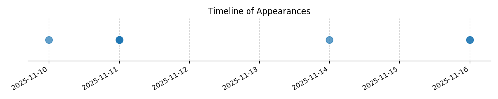

Kategorie: Letecké předpisy
Bezpečnostní pásy musí být na pilotních sedadlech zapnuty po celou dobu letu, aby byla zajištěna maximální bezpečnost posádky v případě nečekaných manévrů, turbulence nebo nouzových situací. Toto pravidlo je součástí základních bezpečnostních předpisů v letectví.

| Datum výskytu |
|---|
| 2025-11-16 |
| 2025-11-14 |
| 2025-11-11 |
| 2025-11-10 |